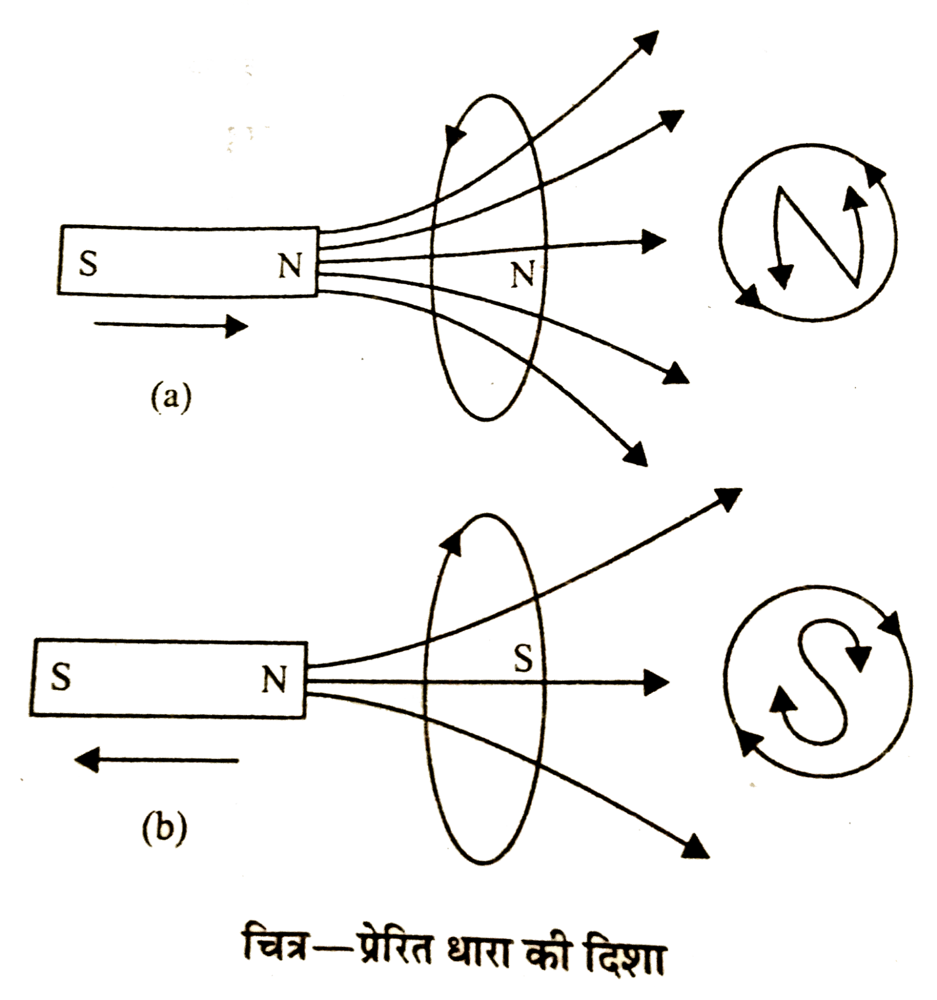
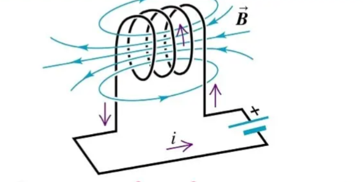
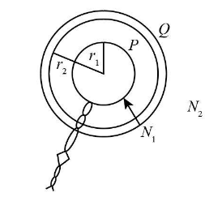

📘 Unit 5(A) - Electromagnetic Induction
Q: What is magnetic flux? Write its unit.
The number of perpendicular magnetic field lines passing through an area is called the magnetic flux. It is denoted by \(\phi\).

If the magnetic field is \(B\) and it makes an angle \(\theta\) with the normal to the area \(A\), then
Its SI unit is the weber (Wb).
If the magnetic field is \(B\) and it makes an angle \(\theta\) with the normal to the area \(A\), then
$$
\phi = BA\cos\theta
$$
This is a scalar quantity.
Its SI unit is the weber (Wb).
Q: What is the weber?
The weber is the SI unit of magnetic flux.
When a magnetic field of 1 tesla acts perpendicularly on an area of 1 m², it is called one weber. It is denoted by the letters 'Wb'.
1 weber \(=\) 1 volt-second
1 weber \(= 10^{8}\) maxwell
When a magnetic field of 1 tesla acts perpendicularly on an area of 1 m², it is called one weber. It is denoted by the letters 'Wb'.
1 weber \(=\) 1 volt-second
1 weber \(= 10^{8}\) maxwell
Q: What is meant by electromagnetic induction?
When the magnetic flux passing through a circuit changes, an electromotive force (emf) is induced in that circuit, due to which an induced current begins to flow in the circuit. This phenomenon is called electromagnetic induction.

Q: In electromagnetic induction, which form of energy is converted into which other form?
In the process of electromagnetic induction, mechanical energy is converted into electrical energy.
Q: Write and explain Faraday's laws of electromagnetic induction.
Faraday stated two laws of electromagnetic induction—
- First law: Whenever the magnetic flux linked with a closed circuit changes, an electromotive force (emf) is induced in the circuit.
- Second law: The magnitude of the induced emf is proportional to the rate of change of magnetic flux.
$$
e=-\frac{d\phi}{dt}
$$
The negative sign represents Lenz's law.
Q: What are the rules used to determine the direction of the induced current in electromagnetic induction?
The direction of the induced current is found using the following rules –
- Fleming's right-hand rule
- Lenz's law
Q: State Fleming's right-hand rule.
If the thumb, forefinger and middle finger of the right hand are held mutually perpendicular such that the forefinger points in the direction of the magnetic field \(B\) and the thumb points in the direction of motion \(v\) of the conductor, then the middle finger gives the direction of the induced current \(I\).

Q: State Lenz's law.
According to Lenz's law, the direction of the induced current is always such that it opposes the cause that produced it. It follows the law of conservation of energy.
Explanation:
Explanation:

- When we bring the N pole of a magnet closer to a coil, the magnetic flux through the coil increases. Hence, according to Lenz's law, the direction of the induced current will be such that it opposes this increasing flux, i.e., the nearest face of the coil itself becomes an N pole so as to prevent the magnet from approaching.
- Similarly, when we move the N pole of a magnet away from the coil, the magnetic flux through the coil decreases. Hence, according to Lenz's law, the direction of the induced current will be such that it opposes this decreasing flux, i.e., the nearest face of the coil itself becomes an S pole so as to prevent the magnet from moving away.
Q: Prove that Lenz's law obeys the law of conservation of energy.
When we bring the N pole of a magnet closer to a coil, the nearest face of the coil itself acts like an N pole, which repels the N pole of the magnet. Hence we have to do work to push the magnet closer. This very work gets converted into electrical energy in the form of the induced current in the coil.
Similarly, when we move the N pole of a magnet away from the coil, the nearest face of the coil itself acts like an S pole, which attracts the N pole of the magnet. Hence we have to do work to move the magnet away. This very work gets converted into electrical energy in the form of the induced current in the coil.
Thus, Lenz's law obeys the law of conservation of energy.
Similarly, when we move the N pole of a magnet away from the coil, the nearest face of the coil itself acts like an S pole, which attracts the N pole of the magnet. Hence we have to do work to move the magnet away. This very work gets converted into electrical energy in the form of the induced current in the coil.
Thus, Lenz's law obeys the law of conservation of energy.
Q: What is self-induction?
When the current flowing in a coil is changed, the magnetic flux produced in that same coil also changes. Due to this change in flux, an induced electromotive force is produced in that same coil, due to which an induced current begins to flow in the opposite direction in that same coil. This phenomenon is called self-induction.

Q: What is the coefficient of self-induction? Write its definition and unit.
If a current \(I\) is flowing in a coil, the magnetic flux \(\Phi\) produced is proportional to the current.
Coefficient of self-induction: When unit current flows in a coil, the total magnetic flux linked with the coil is called the coefficient of self-induction of that coil.
Unit: The SI unit of the coefficient of self-induction is the henry (H).
$$
\Phi \propto I
$$
$$
\Phi = LI
$$
where \(L\) is a constant called the coefficient of self-induction.
Coefficient of self-induction: When unit current flows in a coil, the total magnetic flux linked with the coil is called the coefficient of self-induction of that coil.
Unit: The SI unit of the coefficient of self-induction is the henry (H).
Q: What is the henry?
The henry is the SI unit of self-induction.
When unit current is passed through a coil and the total magnetic flux linked with it is one weber, then the coefficient of self-induction of that coil is called one henry.
When unit current is passed through a coil and the total magnetic flux linked with it is one weber, then the coefficient of self-induction of that coil is called one henry.
Q: Derive the formula for the coefficient of self-induction of a plane circular coil.

If a plane circular coil of \(n\) turns has radius \(r\) and carries a current \(I\), then the intensity of the magnetic field produced at its centre will be—
$$
B=\frac{\mu_0 nI}{2r}
$$
The total magnetic flux linked with the plane circular coil—
$$
\Phi = B\times n(\pi r^2)
$$
$$
\Phi = \left(\frac{\mu_0 nI}{2r}\right)\times n(\pi r^2)
$$
$$
\Phi = \frac{\mu_0 \pi n^2 r I}{2}
$$
Self Inductance:
$$
L=\frac{\Phi}{I}
$$
$$
\boxed{L=\frac{\mu_0 \pi n^2 r}{2}}
$$
Q: Write the factors that affect the coefficient of self-induction of a plane circular coil.
The coefficient of self-induction of a coil is as follows.
The factors that affect the self-inductance of a coil are as follows—
The factors that affect the self-inductance of a coil are as follows—
- \(L \propto \mu_0\), i.e., increasing the magnetic permeability \((\mu_0)\) of the medium placed between the turns of the coil increases the coefficient of self-induction \(L\).
- \(L \propto n^2\), i.e., increasing the number of turns of the coil increases the coefficient of self-induction \(L\).
- \(L \propto r\), i.e., increasing the area \(A\) of the coil increases the coefficient of self-induction \(L\).
Q: Derive the expression for the self-inductance of a long solenoid.

$$
B=\frac{\mu_0 nI}{l}
$$
The total magnetic flux linked with the solenoid—
$$
\Phi = B\times \text{effective area}
$$
Since there are a total of \(n\) turns
$$
\Phi = \left(\frac{\mu_0 nI}{l}\right)\times nA
$$
$$
\Phi = \frac{\mu_0 n^2 IA}{l}
$$
Self Inductance:
$$
L=\frac{\Phi}{I}
$$
$$
\boxed{L=\frac{\mu_0 n^2 A}{l}}
$$
Q: Write the factors that affect the self-inductance of a solenoid.
The coefficient of self-induction of a solenoid is as follows.
The factors that affect the self-inductance of a solenoid are as follows.
The factors that affect the self-inductance of a solenoid are as follows.
- \(L \propto \mu_0\), i.e., increasing the magnetic permeability \((\mu_0)\) of the medium placed inside the solenoid increases the coefficient of self-induction \(L\).
- \(L \propto n^2\), i.e., increasing the number of turns of the solenoid increases the coefficient of self-induction \(L\).
- \(L \propto A\), i.e., increasing the area \(A\) of the solenoid increases the coefficient of self-induction \(L\).
- \(L \propto \dfrac{1}{l}\), i.e., decreasing the length of the solenoid increases the coefficient of self-induction \(L\).
Q: What is mutual induction?
When the current in one coil changes, the flux linked with another coil placed near it also changes, which produces an induced current in the second coil. This phenomenon is called mutual induction.
Q: What is mutual inductance? Define it and state its unit.
Suppose the flux \(\Phi\) linked with a secondary coil, due to a current \(I\) flowing in the primary coil, is given by
Coefficient of mutual inductance: When unit current flows in the primary coil, the total magnetic flux linked with the secondary coil is called the coefficient of mutual inductance of that pair of coils.
Unit: The SI unit of the coefficient of mutual induction is the henry (H).
$$
\Phi \propto I
$$
$$
\Phi = MI
$$
where \(M\) is a constant called the coefficient of mutual inductance of the coils.
Coefficient of mutual inductance: When unit current flows in the primary coil, the total magnetic flux linked with the secondary coil is called the coefficient of mutual inductance of that pair of coils.
Unit: The SI unit of the coefficient of mutual induction is the henry (H).
Q: Derive the formula for the coefficient of mutual induction between two plane circular coils.

Further, suppose a current \(I\) flows in the primary coil, due to which the magnetic field produced at the centre of the first coil will be as follows.
$$
B=\frac{\mu_0 n_1 I}{2r}
$$
Hence, the magnetic flux linked with the second coil—
$$
\phi = B\times \text{effective area of the coil}
$$
$$
\phi = \left(\frac{\mu_0 n_1 I}{2r}\right)\times n_2(\pi r^2)
$$
$$
\phi = \frac{\mu_0 \pi n_1 n_2 r I}{2}
$$
Hence, the coefficient of mutual induction of the coils—
$$
M=\frac{\phi}{I}
$$
$$
M=\frac{\left(\dfrac{\mu_0 \pi n_1 n_2 rI}{2}\right)}{I}
$$
$$
\boxed{M=\frac{\mu_0 \pi n_1 n_2 r}{2}}
$$
Q: Write the factors that affect the coefficient of mutual induction of two coils.
The coefficient of mutual induction of two coils is as follows.
The factors that affect the coefficient of mutual induction of two coils are as follows.
The factors that affect the coefficient of mutual induction of two coils are as follows.
- \(M \propto \mu_0\), i.e., increasing the magnetic permeability \((\mu_0)\) of the medium placed between the coils increases the coefficient of mutual induction \(M\).
- \(M \propto n_1 n_2\), i.e., increasing the number of turns of both coils increases the coefficient of mutual induction \(M\).
- \(M \propto r\), i.e., increasing the radius \(r\) of the second coil increases the coefficient of mutual induction \(M\).
Q: Derive the formula for the coefficient of mutual induction between two coaxial current-carrying solenoids.

Suppose a current \(I\) flows in the primary solenoid, due to which the magnetic field produced inside it will be—
$$
B=\frac{\mu_0 n_1 I}{l}
$$
Hence, the magnetic flux linked with the second solenoid—
$$
\phi = B\times \text{effective area}
$$
$$
\phi = \left(\frac{\mu_0 n_1 I}{l}\right) n_2 A
$$
$$
\phi = \frac{\mu_0 n_1 n_2 IA}{l}
$$
Hence, the coefficient of mutual induction of the solenoids—
$$
M=\frac{\phi}{I}
$$
$$
M=\frac{\left(\dfrac{\mu_0 n_1 n_2 IA}{l}\right)}{I}
$$
$$
\boxed{M=\frac{\mu_0 n_1 n_2 A}{l}}
$$
Q: Write the factors that affect the coefficient of mutual induction between two solenoids.
The coefficient of mutual induction between two solenoids is as follows.
The factors that affect the coefficient of mutual induction between two solenoids are as follows.
The factors that affect the coefficient of mutual induction between two solenoids are as follows.
- \(M \propto \mu_0\), i.e., increasing the magnetic permeability \((\mu_0)\) of the medium placed between the solenoids increases the coefficient of mutual induction \(M\).
- \(M \propto n_1 n_2\), i.e., increasing the number of turns of both solenoids increases the coefficient of mutual induction \(M\).
- \(M \propto A\), i.e., increasing the area \(A\) of the second solenoid increases the coefficient of mutual induction \(M\).
- \(M \propto \dfrac{1}{l}\), i.e., decreasing the length of the solenoids increases the coefficient of mutual induction \(M\).
Q: Write the difference between self-induction and mutual induction.
| Self-induction | Mutual induction |
|---|---|
|
|
Q: What are eddy currents? What are the losses caused by eddy currents, and what are their uses?
When a changing magnetic field passes through a conducting plate, circulating currents are produced in the plate, which are called eddy currents.
 Losses:
Losses:
- Heat is dissipated in the metal.
- Energy loss occurs in machines.
- To control the motion in electric meters.
- In induction heaters and braking.
Q: Why is an electric spark seen at the switch when an electric circuit is closed?
When a switch is closed, a sudden high current flows in the circuit. When the switch contacts break, an electric spark appears due to electrical breakdown of the air.
Q: Why does a bird sitting on a high-voltage current-carrying wire fly away as soon as the current is switched on?
In a wire at high voltage, the electric field is very strong. A charge is also induced on the bird's body, and due to the resulting electrical attraction and repulsion, the bird receives a shock and flies away.
Q: Why is the wire used to make the resistance coil inside a resistance box doubled over?
Doubling the wire cancels out the eddy currents that would otherwise be produced in the resistance box. This reduces energy loss and heating.
Multiple Choice Questions (MCQ)
- Q.1 The unit of self-induction is –
(a) weber (b) tesla (c) henry (d) newton
Answer – (c) henry - Q.2 If the rate of change of current \(I\) in a coil is \(dI/dt\), the emf produced will be –
(a) \(e = L\,dI/dt\) (b) \(e = L/(dI/dt)\) (c) \(e = I/L\) (d) \(e = dt/dI\)
Answer – (a) - Q.3 The unit of mutual inductance between two coils is –
(a) weber (b) henry (c) ohm (d) tesla
Answer – (b) henry - Q.4 The coefficient of self-induction of a coil depends on?
(a) the length of the coil (b) the number of turns of the coil (c) the area of the coil (d) all of the above
Answer – (d) - Q.5 The relation \(M = \sqrt{L_1 L_2}\) is called –
(a) Fleming's rule (b) Maxwell's rule (c) the rule of coupled coils (d) Faraday's law
Answer – (c) - Q.6 What gives the direction of the induced current?
(a) Faraday's law (b) Lenz's law (c) Ohm's law (d) Coulomb's law
Answer – (b) - Q.7 The SI unit of magnetic flux is –
(a) tesla (b) weber (c) henry (d) ampere
Answer – (b) weber - Q.8 When flux changes with time, what is produced?
(a) induced current (b) induced emf (c) both (a) and (b) (d) none of these
Answer – (c) - Q.9 The coefficient of self-induction of a coil will be doubled if –
(a) the number of turns is doubled (b) the length is halved (c) the area is doubled (d) all of the above
Answer – (d) - Q.10 If the current in a circuit is increasing, in which direction will the induced current be?
(a) in the direction of the increase (b) opposite to the direction of the increase (c) in both directions (d) zero
Answer – (b) - Q.11 Which law does Lenz's law follow?
(a) the law of conservation of energy (b) the law of conservation of momentum (c) Ohm's law (d) Coulomb's law
Answer – (a) - Q.12 The definition \(L = N\phi/I\) is for –
(a) resistance (b) capacitance (c) coefficient of self-induction (d) coefficient of mutual induction
Answer – (c) - Q.13 The coefficient of self-induction of a solenoid is –
(a) \(\mu_0 n^2Al\) (b) \(\mu_0 n^2Al\) (c) \(\left(\mu_0 N^2 A\right)/l\) (d) \(\mu_0 A^2 N\)
Answer – (c) - Q.14 The induced emf depends on?
(a) the rate of change of flux (b) the strength of the current (c) the resistance (d) the temperature
Answer – (a) - Q.15 What is produced when a conductor moves in a magnetic field?
(a) magnetic force (b) electric force (c) induced emf (d) resistance
Answer – (c)
Fill in the Blanks
- 1. The unit of the coefficient of self-induction is ________. Answer – henry
- 2. Lenz's law obeys the conservation of ________. Answer – energy
- 3. The coefficient of mutual induction is expressed as \(M = \sqrt{L_1 L_2}\) when the coupling is ________. Answer – ideal
- 4. The unit of magnetic flux is ________. Answer – weber
- 5. Induced emf = ________ . Answer – \(e = -d\phi/dt\)
Match the Following
| Column A | Column B |
|---|---|
| (1) Faraday's law | (a) Direction of induced current |
| (2) Lenz's law | (b) Induced emf |
| (3) Self-induction | (c) \(L = N\phi/I\) |
| (4) Mutual induction | (d) \(M = N_2\phi_{21}/I_1\) |
| (5) Unit henry | (e) Self-induction |